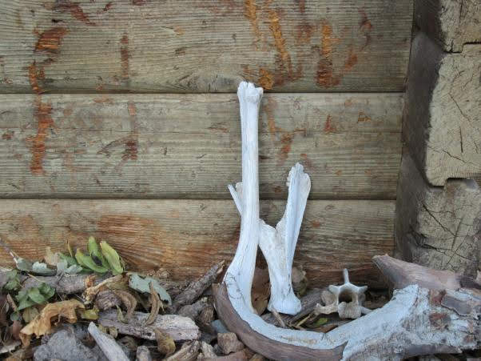
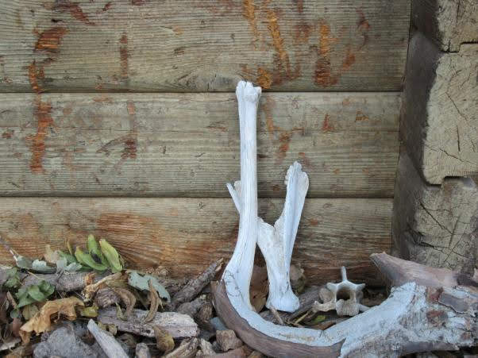

And she found these bones, she loves these bones. 
And she found these bones, she loves these bones. 
It feels like Athena is about to burst out of my skull—or some other god, like the god of anger or the god of what-in-the-world-is-inside-you.
And I'd make my hand a constellation, and call it greek mythology, if hubris could make the gods take notice.
But rather I am small, enough to fear a whisper, to flinch at things that would burn before the gold chariot of the morning.
Right now, it is night. And my chest feels like affection rises against me. A roar of red dunes, flaming red eyes and her spear—is a weapon. Not a metaphor, I realize, as the blade cuts across my chest. And I know that this wound will ache.
Please, goddess, I flinch. Do not raise you hand like that. Please, god, may your mercy find virtue in someone. Save those around me—their affection for the worthy. Do not let it be wasted on one whose heart grew up so strangled.
Warning, this particular link will take you off-site